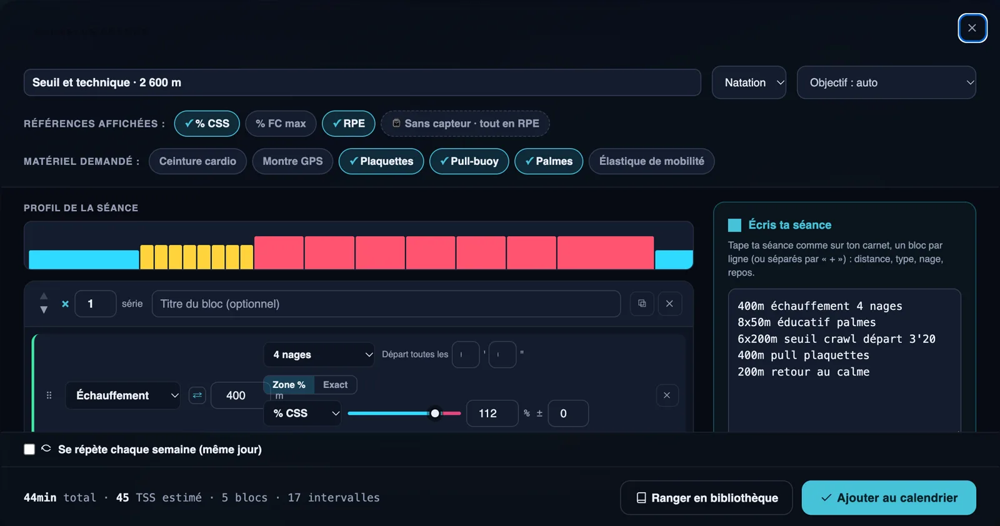
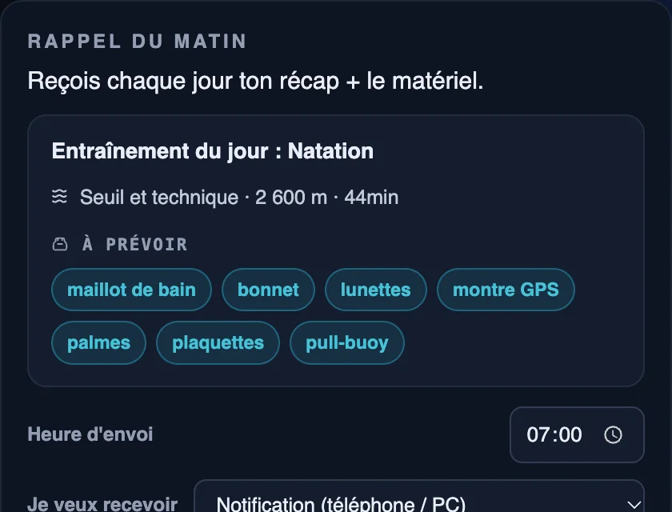

Le logiciel d'entraînement des clubs de natation
Écrivez vos séances comme sur votre carnet de bord de bassin, avec les départs, les nages et le matériel. Chaque nageur reçoit sa séance avec des temps adaptés à son niveau, et vous suivez les présences et les chronos des jeunes sur toute la saison.
Entraîneurs illimités · Zones CSS par nageur · Données hébergées en Europe

Une ligne d'eau, plusieurs niveaux
Dans une même ligne, les nageurs n'ont ni les mêmes temps ni les mêmes départs. Les séances recopiées au tableau blanc ou envoyées en photo sur WhatsApp ne s'adaptent à personne.
Écrire vite
La notation que vous utilisez déjà devient une séance complète, avec la durée et la charge.
Des temps pour chacun
Les intensités en % de CSS donnent à chaque nageur ses propres temps au 100 m.
Le bon matériel
Plaquettes, pull-buoy, palmes, tuba : chaque nageur sait le matin ce qu'il doit apporter.
Une séance de natation comme sur un carnet
Tapez « 400m échauffement 4 nages », « 8x50m éducatif palmes », « 6x200m seuil crawl départ 3'20 » ou « 400m pull plaquettes » : Sillance reconnaît les distances, les nages, les départs, les intensités et le matériel.
- Échauffement, éducatifs, séries, récupération, retour au calme.
- Profil d'intensité de la séance et durée estimée selon la CSS du nageur (calcule ta CSS).
- Le matériel cité est ajouté automatiquement à la séance.
Le maillot, le bonnet et les plaquettes
Chaque matin, le nageur reçoit le rappel de sa séance avec la liste de ce qu'il doit apporter : maillot, bonnet, lunettes, et le matériel demandé par la séance. Fini les 30 minutes de route pour découvrir qu'on a oublié son maillot.

Les chronos des jeunes, test après test
Gardez les chronos de référence de chaque jeune nageur sur la saison : son meilleur temps, l'écart avec le test précédent et ce qu'il a gagné depuis la rentrée. Les progrès se voient, et se partagent avec les familles.

Tout le club, au même endroit
Groupes
Avenirs, jeunes, compétition, maîtres, loisir : une séance pour tout un groupe en un clic.
Créneaux et présences
Les créneaux de bassin, leur capacité et la liste des présents.
Compétitions
Les meetings de la saison, ciblés par groupe.
Aux couleurs du club
Logo et couleurs du club dans l'application de vos nageurs.
Un prix au nombre de nageurs suivis, entraîneurs illimités
Club
Grand club
Club illimité
Le détail des offres est sur la page tarifs. Voir aussi : club de triathlon · run club · coach indépendant.
Les questions des clubs de natation
Comment écrit-on une séance de natation dans Sillance ?
Comme sur un carnet : « 400m échauffement 4 nages », « 6x200m seuil crawl départ 3'20 », « 400m pull plaquettes ». Sillance construit la séance avec les distances, les nages, les départs, l'intensité et le matériel.
Les intensités sont-elles adaptées à chaque nageur ?
Oui. Les intensités s'expriment en pourcentage de la CSS (vitesse critique de nage) de chaque nageur. Une même séance donne donc des temps au 100 m différents selon le niveau de chacun.
Nos nageurs doivent-ils avoir une montre ?
Non. Le nageur consulte sa séance dans l'application. S'il nage avec une montre, il peut importer ses fichiers .FIT ; les montres COROS remontent leurs séances automatiquement.
Peut-on suivre la progression des jeunes nageurs ?
Oui. Le suivi jeunes garde les chronos de référence de chaque nageur sur la saison : meilleur temps, écart avec le test précédent et gain depuis le début de la saison.
Combien coûte Sillance pour un club de natation ?
50 € par mois jusqu'à 50 nageurs suivis, 112,50 € jusqu'à 150, 150 € jusqu'à 300, entraîneurs illimités. Les 10 premiers clubs de chaque palier bénéficient d'un tarif fondateur bloqué à vie.
Pour toi et tes athlètes
On vous montre Sillance sur votre club ?
20 minutes avec vos groupes, vos créneaux de bassin et vos séances.